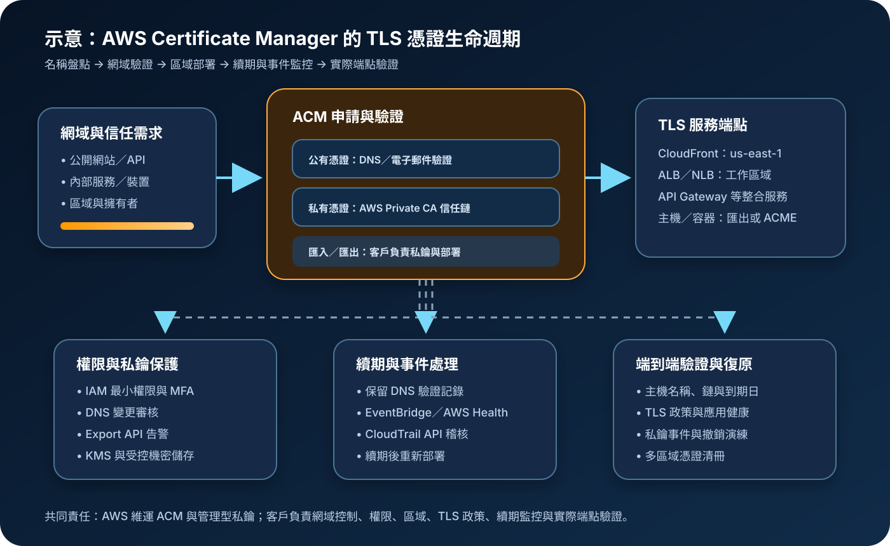

AWS Certificate Manager：TLS 憑證簽發、部署與續期治理
AWS Certificate Manager（ACM）集中申請、匯入、部署與監控 TLS 憑證。架構重點不只是讓網站出現 HTTPS，而是確認憑證信任類型、網域控制權、區域位置、私鑰保管、續期資格、重新部署及到期告警形成可驗證的生命週期。
作者：Dr. William｜查閱與發布：2026-11-01
服務定位
AWS Certificate Manager 可簽發 Amazon Trust Services 信任的公有憑證、透過 AWS Private CA 簽發私有憑證，也能匯入第三方憑證。ACM 管理型憑證可直接關聯 Elastic Load Balancing、Amazon CloudFront、Amazon API Gateway 等整合服務，由服務取得憑證並處理 TLS 終止。
對 AWS 整合服務，ACM 可管理憑證續期與部署；對 EC2、容器、Kubernetes、混合環境或地端主機，可評估 ACME 自動化或可匯出的 ACM 公有憑證。使用可匯出憑證時，客戶取得私鑰後必須自行保護、部署、輪替與撤銷。需要企業內部信任鏈、裝置或服務身分時，通常還要搭配 AWS Private CA，而不是把公有憑證當成內部 PKI。
核心概念與服務邊界
憑證類型與部署
- 非匯出公有憑證：供 ACM 整合服務使用，私鑰由 AWS 管理，不能直接下載到一般主機。
- 可匯出公有憑證：可部署到 EC2、容器或地端環境；簽發、續期與匯出 API 依定價規則計費。
- ACME 公有憑證：由 ACME 用戶端持有私鑰並自動申請與續期，不能綁定 ACM 整合服務。
- 私有憑證：由 AWS Private CA 或自有私有 CA 建立，僅受安裝該信任鏈的客戶端信任。
- 匯入憑證：憑證、私鑰與鏈由客戶提供；ACM 不會替第三方憑證自動重新簽發。
驗證、區域與續期
- DNS 驗證：以 ACM 提供的 CNAME 證明網域控制權，保留記錄可支援後續自動續期。
- 電子郵件驗證：依指定網域聯絡信箱核准，續期仍可能需要人工動作。
- 區域資源：ACM 憑證存在特定區域；與區域型整合服務通常必須位於相同區域。
- CloudFront 例外：檢視者 HTTPS 使用的 ACM 憑證必須申請或匯入於美國東部（維吉尼亞北部）
us-east-1。 - 續期資格：管理型憑證須符合使用中及驗證記錄可用等條件，不能只依賴「已開啟自動續期」的假設。
適合與不適合的使用情境
適合
- Application Load Balancer、Network Load Balancer、CloudFront 或 API Gateway 需要公開 HTTPS。
- 多個 AWS 帳號與區域需要統一盤點憑證狀態、用途、到期日與責任人。
- 內部服務、裝置、使用者或工作負載需要私有 PKI，並能治理 AWS Private CA。
- EC2、容器或地端主機需要公有憑證，且團隊具備自動安全部署可匯出憑證或 ACME 的能力。
- 第三方憑證要集中關聯 AWS 服務，但仍有明確的重新簽發與重新匯入程序。
不適合或不能單獨完成
- 把 TLS 憑證當成使用者登入、API 授權、工作負載權限或零信任政策的替代品。
- 需要程式碼簽章、電子郵件簽章或文件簽章，卻只使用一般 TLS 伺服器憑證。
- 要求公有憑證中的內部名稱或敏感資產名稱不被公開；公有憑證會記錄於 Certificate Transparency 日誌。
- 無法控制 DNS 或驗證信箱，也沒有可持續維護的網域所有權流程。
- 把匯入或匯出憑證交給人工複製，卻沒有私鑰保護、輪替、自動部署與到期告警。
示意故事案例：為多區域會員入口建立憑證生命週期
以下為示意案例，不代表特定企業或正式部署。 一家線上服務在東京區域使用 Application Load Balancer 提供 API，並以 CloudFront 加速會員網站。過去憑證由不同團隊人工購買，CloudFront 憑證曾錯放在東京區域，DNS 驗證記錄也曾在網域整理時被刪除，造成續期失敗風險。
團隊把公開名稱分為網站與 API 兩組憑證：CloudFront 檢視者憑證建立在 us-east-1，東京 ALB 憑證建立在工作負載所在區域。兩者採 DNS 驗證，CNAME 記錄由受控的基礎設施程式碼管理，DNS 變更需審核。憑證申請權限以 IAM 條件限制可申請的網域與驗證方式，管理者使用 MFA 與短期憑證。
團隊以 CloudTrail 保存 ACM API 操作，透過 EventBridge 接收即將到期、續期需要動作、可用與撤銷事件，再通知值班人員。負載平衡器、CloudFront、DNS、應用健康與外部 TLS 探測共同納入上線檢查。內部服務使用另一套私有 CA 與短生命週期憑證，避免把公開萬用字元憑證複製到每台主機。

建置與運作流程
- 盤點名稱與用途：列出正式網域、子網域、內部名稱、服務、帳號、區域、擁有者、環境與信任需求。
- 選擇憑證模式：區分非匯出公有憑證、可匯出公有憑證、ACME、私有憑證與匯入憑證。
- 降低名稱範圍：避免不必要的萬用字元與過多 SAN；公開憑證名稱不得包含敏感資訊。
- 決定區域：依整合服務確認憑證區域；CloudFront 檢視者憑證使用
us-east-1。 - 建立最小權限：限制 RequestCertificate、ImportCertificate、ExportCertificate、DeleteCertificate 與標籤操作；以 IAM 條件限制網域、驗證方式與可匯出設定。
- 使用短期管理存取：管理者透過 IAM Identity Center 或角色取得短期憑證，啟用 MFA，不建立長期 Access Key。
- 申請與驗證：公有憑證優先採 DNS 驗證；把驗證 CNAME 納入受控 DNS 設定並避免誤刪。
- 部署至整合服務：關聯 CloudFront、負載平衡器、API Gateway 或其他支援服務，確認完整憑證鏈與 TLS 政策。
- 處理非整合工作負載：若使用可匯出憑證或 ACME，建立加密傳輸、受控儲存、原子替換、服務重新載入與回復流程。
- 保護應用機密：應用程式的 credential、Access Key、Secret Key、Token、密碼與 cookie 不得寫入憑證、自動化腳本或日誌；使用 Secrets Manager 或 Parameter Store。
- 啟用稽核與告警：使用組織級 CloudTrail、EventBridge、AWS Health、CloudWatch 或 Security Hub CSPM 監控申請、匯出、刪除、撤銷與到期。
- 驗證端到端 TLS：從外部與內部客戶端檢查主機名稱、鏈、協定、加密套件、到期日、重新導向與應用健康。
- 演練續期與撤銷：測試 DNS 記錄遺失、私鑰疑似外洩、第三方憑證到期、重新匯入及服務回復。
成本、可用性與維運考量
供 ACM 整合 AWS 服務使用的非匯出公有憑證通常不另收憑證費，但負載平衡器、CloudFront、API Gateway、Route 53、CloudTrail、CloudWatch、EventBridge、KMS 與資料傳輸仍依各服務計費。可匯出公有憑證與 ACME 憑證依網域、萬用字元、簽發、續期及 API 用量計費；AWS Private CA 另有 CA 運行與憑證費用。實際金額須以查閱日定價頁、帳號用量與所選區域驗證。
ACM 是區域型服務，單一區域中的憑證不能直接取代其他區域需要的憑證。相同 DNS 驗證 CNAME 可支援在多個區域重新申請相同名稱，但每個區域的憑證 ARN、服務關聯與續期狀態都要個別管理。高可用不只取決於 ACM，還包括 DNS、CloudFront、負載平衡器、來源服務、TLS 政策與客戶端信任。
ACM 簽發的公有憑證目前有明確有效期與提前續期流程；DNS 驗證憑證要保持 CNAME 可解析且符合使用條件。匯入憑證不會由 ACM 自動重新簽發。可匯出憑證即使由 ACM 續期，更新後仍須安全部署至目標主機，因此必須監控「ACM 已續期但工作負載仍使用舊憑證」的落差。
AWS Certificate Manager 特有資安風險與控制
- DNS 驗證記錄遭未授權新增：Route 53 與外部 DNS 權限採最小權限、MFA、短期憑證、變更審核與 CloudTrail 稽核。
- 驗證 CNAME 被誤刪：以基礎設施程式碼管理並加入防刪與漂移檢查，續期前持續驗證公開解析。
- 申請未核准網域：使用 ACM IAM 條件限制網域名稱、驗證方法與匯出屬性，定期盤點異常申請。
- 萬用字元憑證擴大影響：按應用與環境切分憑證，限制 SAN，避免把同一私鑰分散到大量主機。
- Certificate Transparency 洩露命名：公開憑證名稱視為公開資料，不放入客戶名稱、內部專案代號或敏感資產描述。
- 區域放置錯誤：部署前驗證服務與憑證區域；CloudFront 檢視者憑證固定檢查
us-east-1。 - 匯出私鑰外洩：ExportCertificate 權限高度限制並告警；私鑰只透過加密通道進入受控儲存，不輸出到終端歷史、工單、日誌或映像。
- 匯入私鑰保護不足：在受控環境產生私鑰，使用適當檔案權限、HSM 或機密儲存，建立輪替與銷毀紀錄。
- KMS 授權遭誤刪：ACM 使用 AWS 受管 KMS 金鑰保護私鑰；避免任意刪除整合服務需要的 KMS grant，並監控異常變更。
- 續期成功但未部署：對可匯出與私有憑證建立 Certificate Available 事件、自動部署、重新載入、健康檢查與回復機制。
- 第三方憑證到期：匯入憑證需獨立追蹤重新簽發、重新匯入與服務關聯，不依賴 ACM 自動續期。
- CAA 或網域控制變更：監控 DNS 與 CAA，接收 Renewal Action Required、AWS Health 與到期事件。
- 弱 TLS 政策：憑證有效不代表協定安全；在整合服務選擇現行 TLS 政策，停用不必要的舊協定與弱加密套件。
- 私有 CA 被濫用：CA 管理與憑證核發角色分離，限制範本、名稱、有效期與撤銷權限，記錄 CRL 或 OCSP 維運責任。
- 缺少外部驗證：除 ACM 狀態外，從實際使用者路徑檢查憑證鏈、SNI、主機名稱、到期日與服務回應。
- 機密混入自動化：credential、Access Key、Secret Key、Token、密碼與 cookie 不得寫入程式碼、標籤、URL 或記錄；應使用 Secrets Manager 或 Parameter Store。
共同責任邊界
AWS 負責 ACM 服務與底層基礎設施安全，並使用 AWS KMS 協助保護 ACM 內的憑證私鑰；對符合條件的 ACM 管理型憑證，AWS 執行簽發、續期及與整合服務的管理流程。客戶負責證明並持續控制網域、選擇正確名稱與區域、限制 IAM 與 DNS 權限、設定服務 TLS 政策、保留驗證記錄、監控續期、測試實際端點及處理事件。
使用匯入、匯出、ACME 或私有憑證時，客戶責任增加，包括私鑰產生與保管、CA 治理、續期後部署、主機重新載入、撤銷、信任鏈分發及到期復原。所有模式都應落實 IAM 最小權限、MFA／短期憑證、網路隔離、公開存取控制、適用的 KMS 加密、Secrets Manager 或 Parameter Store、CloudTrail／CloudWatch，以及設定與應用資料的備份與跨區復原。
上線與維運可執行檢查清單
- □ 已建立憑證清冊，包含名稱、類型、帳號、區域、ARN、擁有者、關聯資源與到期日。
- □ 已區分公有、私有、匯入、可匯出與 ACME 憑證，未把不同生命週期混為一談。
- □ SAN 與萬用字元範圍已最小化，公開名稱不含敏感資訊。
- □ CloudFront 檢視者憑證位於
us-east-1；其他區域型服務的憑證位置已逐一驗證。 - □ DNS 驗證 CNAME 可由公開 DNS 解析，並受基礎設施程式碼、審核與防刪控制。
- □ ACM 與 DNS 管理權限採最小權限，管理者使用 MFA 與短期憑證。
- □ 憑證申請政策限制可用網域、驗證方式與可匯出設定。
- □ ExportCertificate、ImportCertificate、DeleteCertificate 與撤銷操作有明確核准與告警。
- □ 匯入或匯出私鑰不會出現在 Git、終端歷史、日誌、映像、工單、聊天或公開儲存區。
- □ ACM 管理型私鑰的 KMS grant 未遭任意刪除，相關變更納入監控。
- □ 組織級 CloudTrail 可查到 ACM 與 DNS 重要操作，日誌集中保存並防止未授權刪除。
- □ EventBridge 已處理即將到期、續期需要動作、憑證可用、撤銷與到期事件。
- □ 匯入憑證有重新簽發與重新匯入程序；可匯出憑證有續期後自動部署程序。
- □ TLS 政策已停用不必要的舊協定與弱加密套件，客戶端相容性已有測試。
- □ 外部監控會實際檢查主機名稱、憑證鏈、SNI、到期日、HTTP 回應與應用健康。
- □ 私鑰疑似外洩、DNS 驗證失效、CA 失效與憑證到期情境已完成演練。
- □ 私有 CA 的管理、核發、撤銷、CRL／OCSP 與信任鏈分發責任已文件化。
- □ 憑證自動化所需應用機密使用 Secrets Manager 或 Parameter Store，並有輪替與存取稽核。
- □ 多區域服務已分別盤點憑證、驗證記錄、服務關聯與故障切換程序。
- □ 正式內容與設定紀錄不含任何真實 credential、Access Key、Secret Key、Token、密碼或 cookie 值。
AWS 官方一手來源
- Choosing how to issue certificates with AWS（查閱：2026-11-01）
- AWS Certificate Manager public certificates（查閱：2026-11-01）
- AWS Certificate Manager DNS validation（查閱：2026-11-01）
- Renewal for domains validated by DNS（查閱：2026-11-01）
- Managed automation with integrated services（查閱：2026-11-01）
- AWS Certificate Manager exportable public certificates（查閱：2026-11-01）
- Data protection in AWS Certificate Manager（查閱：2026-11-01）
- Best practices for AWS Certificate Manager（查閱：2026-11-01）
- Amazon EventBridge support for ACM（查閱：2026-11-01）
- Using CloudTrail with AWS Certificate Manager（查閱：2026-11-01）
- Requirements for using SSL/TLS certificates with CloudFront（查閱：2026-11-01）
- AWS Certificate Manager pricing（查閱：2026-11-01）
- AWS Shared Responsibility Model（查閱：2026-11-01）
內容說明
本文依查閱日可用的 AWS 官方文件整理，作為基礎學習與架構討論材料；實際部署仍須依最新憑證有效期、區域、定價、整合服務、瀏覽器政策、CA 規範、法規與復原測試結果調整。